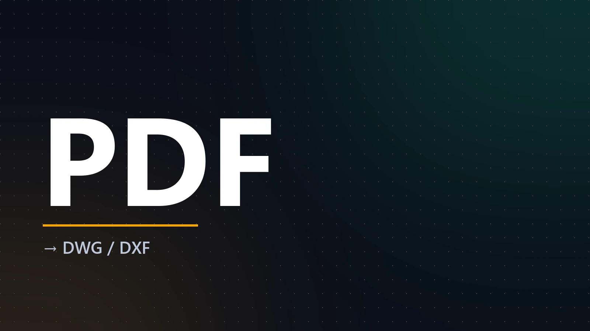

PDF σε DWG και εικόνα σε DXF: πότε δουλεύει και τι κάνουμε όταν δεν
Το pdf2cad κάνει θάματα. Αρκεί το PDF να περιέχει διανύσματα. Όταν περιέχει εικόνα, υπάρχει δεύτερος δρόμος.

Δύο ειδών PDF
Όταν δημιουργείται ένα PDF, είτε από σχεδιαστικό πρόγραμμα είτε από οποιαδήποτε εφαρμογή που χειρίζεται διανύσματα, ο χρήστης επιλέγει αν το αρχείο θα περιέχει διανυσματική πληροφορία ή εικόνα.
- Διανυσματικό PDF: η εντολή pdf2cad επιστρέφει ένα σχέδιο DWG με γραμμές, κείμενα και διαστάσεις.
- PDF με εικόνα: το DWG που θα προκύψει περιέχει ένα λευκό πλαίσιο. Καμία πληροφορία.
Αν πέσετε στη δεύτερη περίπτωση, μην το κυνηγήσετε με το pdf2cad. Δεν φταίει η εντολή· δεν υπάρχει διάνυσμα για να μετατραπεί.
Η διαδικασία όταν το PDF είναι εικόνα
- Αποθηκεύστε το PDF ως εικόνα, κατά προτίμηση σε TIFF. Χωρίς συμπίεση που «μαλακώνει» τις γραμμές.
- Στο progeCAD, ανοίξτε Add-On → Raster to vector, ή γράψτε
wintopoστη γραμμή εντολών. - Η εντολή χρησιμοποιεί το Wintopo, που εγκαθίσταται μαζί με το progeCAD, και μετατρέπει την εικόνα σε DXF.
- Ανοίξτε το DXF και καθαρίστε το.
Μια ειλικρινής προειδοποίηση
Η μετατροπή raster σε vector είναι ίχνη (tracing), όχι ανάκτηση του αρχικού σχεδίου. Θα πάρετε γραμμές που ακολουθούν τα pixel. Με διπλές γραμμές, σπασίματα και κείμενα που δεν είναι κείμενα. Είναι μια πολύ καλή αφετηρία, όχι τελικό σχέδιο. Ο χρόνος που γλιτώνετε είναι στο σχεδίασμα από το μηδέν, όχι στο καθάρισμα.
Αν χρειάζεστε αναλυτικότερο οδηγό για τη διαδικασία, γράψτε μας στο info@12358soft.com.